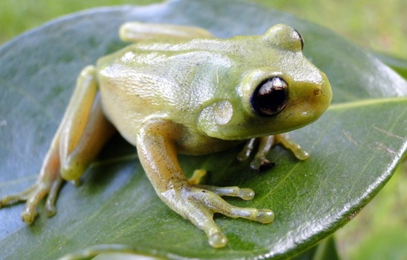
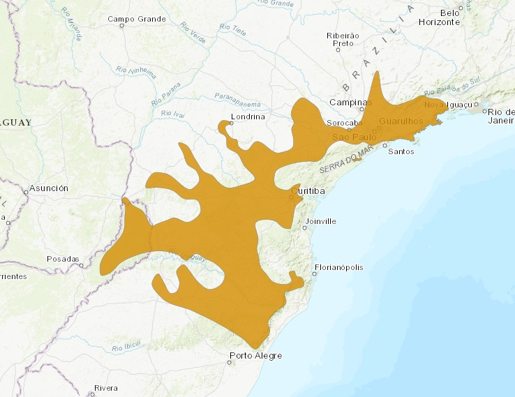

Nome popular sugerido: Perereca-verde e Canebrake Treefrog
Sapo da espécie Aplastodiscus perviridis

(The IUCN Red List of Threatened Species, 2021)É uma espécie comum, com registros na região central do Brasil, sudeste e sul, até o nordeste da Argentina e, possivelmente, no Paraguai.
(“Perereca-verde | Espécies da Floresta com Araucárias,” 2026)(“Aplastodiscus perviridis,” 2022)Os representantes desta espécie são geralmente verdes, podendo variar entre o verde escuro, claro ou amarelado. Possuem várias pequenos pontos pretos ao longo do dorso. Podem ser encontrados na natureza de agosto a abril. Podem realizar tanatose e geralmente vocalizam sobre gramíneas e arbustos em áreas abertas. Fazem seus ninhos escavados no chão às margens de riachos ou pequenos córregos. O macho guia a fêmea até o ninho subterrâneo, onde ela libera sua desova num fundo lamacento. Os ovos, embriões e girinos são aquáticos.
(“Perereca-verde | Espécies da Floresta com Araucárias,” 2026)Essas pererecas se alimentam de ácaros, aranhas, besouros e lagartas de borboletas e mariposas.
(“Perereca-verde | Espécies da Floresta com Araucárias,” 2026)